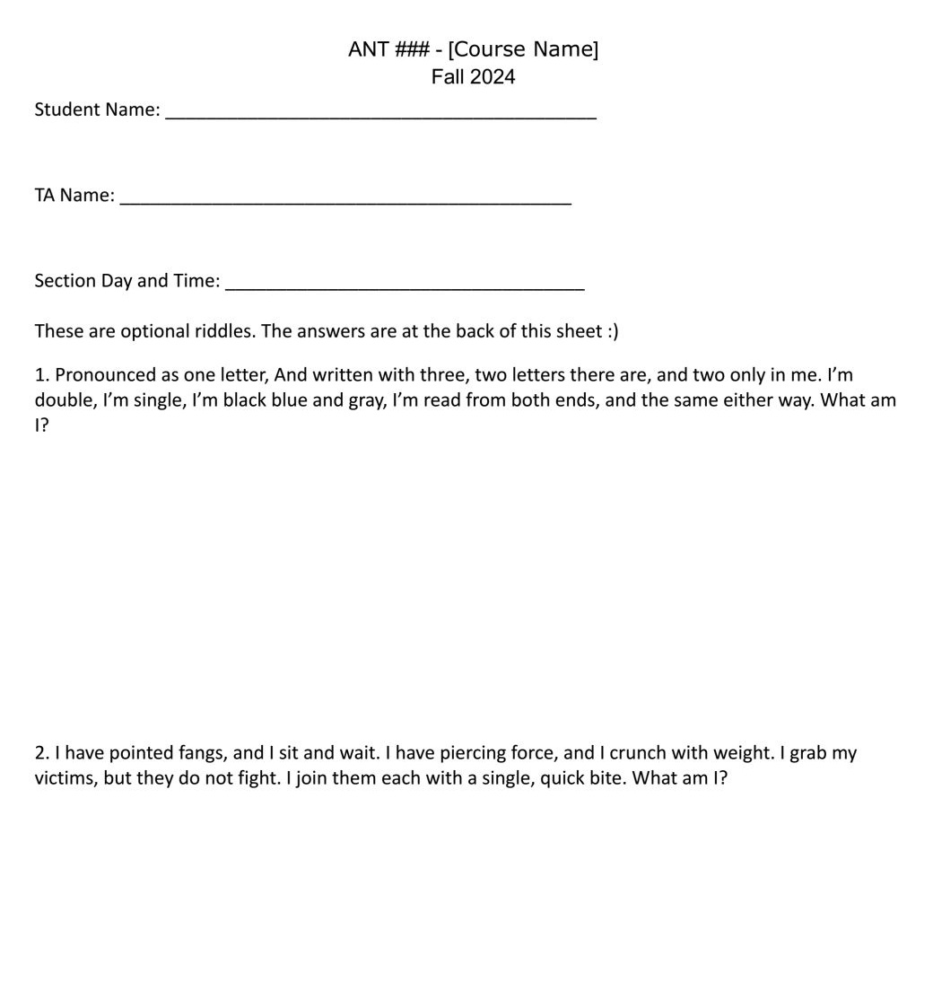

Inclusion and Accomodations in the Classroom
Sythong Run(This was originally posted on my LinkedIn in November 2024)
As a teaching assistant (TA), I am actively learning to create an equitable, inclusive, and accessible learning experience for students. In this rather lengthy post, I will share what I have been doing and learning about creating an inclusive classroom.
I TA for a class of 184 students, where the professor teaches the main lecture. I lead two discussion sections, which account for 41 students. The class administers occasional pop quizzes during the last 15 minutes of the lecture. To support students who require extra time and alternate testing locations, other instructors and I consulted with my institution's Disability Resource Center (CDR). We devised a system to notify students via email on the morning of each quiz, instructing them to go take their quiz at the CDR. Students have the option to skip lecture to take the quiz during class time or leave the lecture hall when the quiz starts and take the quiz at a different time.
I had students who preferred not to skip lecture, so I devised a plan to offer another option for those who may not be comfortable leaving the lecture hall when the quiz starts. I had my students sit at the front of the class where I could easily identify them. When the quiz starts, I give students a riddle sheet I had created to look like the quiz (see image) that they are welcome to solve or scribble on and return the sheet to me before they leave.
I also consulted the list of academic accommodations at SU, so I can think about incorporating Universal Design Learning principles into my classroom. In other words, proactively design a curriculum that could be used for the greatest number of students, making it more inclusive and accessible. Here is a list of actionable items I believe would enhance accessibility:
- Allow food and drink.
- Technology use: Allow laptops or other devices for note-taking. You can also consider designating the front-row seats as screen-free to create a less distracting environment.
- Live caption: Enable real-time captioning with PowerPoint or Google Presentation when presenting. Your institution may also have other technology that you can use.
- Enable close-caption for videos.
- PowerPoint access: Provide digital copies of the presentations used for the class.
- Add slide numbers to your PowerPoint.
- Use dyslexia-friendly style. The British Dyslexia Association has helpful guides that you can check out. If you like to learn further, I found this article insighful. The key takeaway is that, while there are misconceptions about dyslexia-friendly fonts, fonts do matter, as they are important for the accessibility of all readers
- Use high-contrast colors. I found this tool helpful; you might like to check it out when creating contents.
- Incorporate short breaks (especially for three-hour-long classes).
- Avoid back-to-back assessments: Space out quizzes, tests, and major assignments throughout the semester.